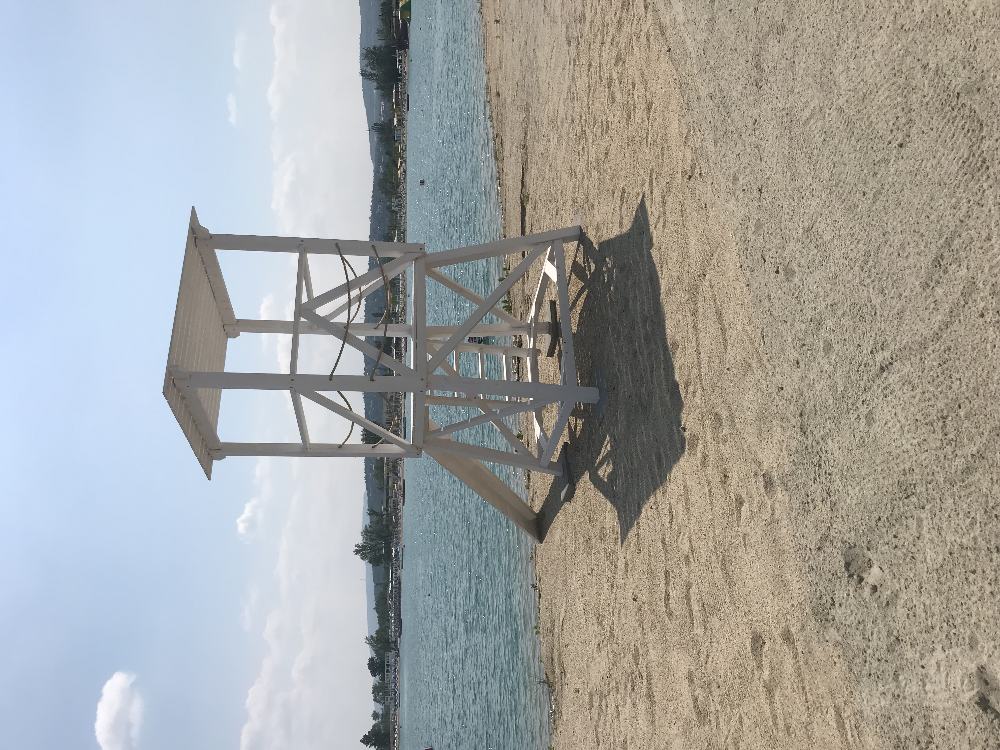

Eddigi munkáink





20 éve foglalkozunk asztalos munkákkal Pest megyében , Budapesten és vonzáskörzetében. Foglalkozunk lakóépületek, irodák teljes belső bútorozásával. Kerthelyiségek, teraszok kialakításával, kültéri bútorok és épületrészek gyártásával. Cégünk 15 éves múlttal rendelkezik a filmgyártás, díszletépítés területén.
Egyedi konyhák
Beépített szekrények
Fürdőszoba bútorok
Francia, gyerek ágyak
Asztalok
Előszoba bútorok
Beltéri ajtók
Kerti pad és asztal
Szaletli
Fa házak (nem lakóépület)
Gyerek játszótér
Terasz burkolat
Kültéri fa falburkolat
Előtető
Egyedi fal dekorációk
Tálak és tálalók
Íves asztalok
Lépcsők, korlátok
Bérmarás
- Ha nem találta az önnek megfelelő szolgáltatást kérjük érdeklődjön telefonon vagy küldjön üzenetet e-mail címünkre. -
Egyedi bútorok gyártásának elengedhetetlen feltélele a megrendelő igényeinek megismerése. Előzetes egyeztetés után munkatársaink a helyszini felmérés alatt pontosítják a részleteket a megrendelővel. Az anyaghasználatot, színmintáink segítségével a színt, vasalatok kiválasztása az igénybevételnek megfelelően katalógusok segítségével. Bútorainkat mindennapi használatra készítjük, így a megjelenés mellett fontos az optimális elrendezés ez elengedhetetlen a megfelelő kényelem elérése érdekében.
Szakképzett munkatársaink és professzionális gépparkunk segítségével elkészítjük megrendeléseit. Gyártás során a termékeket az igénybevételhez megfelelő felületkezeléssel látjuk el.
-Szekrények készülhetnek tömörfából (tölgy, kőris, fenyő, akác) felhasználásával. Készülhet ezen kívül bútorlapból amelynek színént és mintázatát katalógusból választhatja ki. MDF felhsználásával gyártott termékek esetében végtelen színkombináció lehetséges .
-Belső ajtók, tolóajtó, lengőajtó. Készülhetnek tömörfából vagy MDF felhasználásával.
-Felületkezelés. Lakkozás, pácolás, olajozás,
Saját egyedi termékek marása skiccekből vagy DWG rajzokból. Íves alkatrészek, sablonok, sorozat fúrás. Lapanyagból: bútorlap, MFD, rétegelt, tömörfa, plexi, műanyag és gerenda alapanygokból.
Látványtervek valósághűen ábrázolják a megrendelő elképzeléseit. A gyártás előtt lehetőségünk van a terméket többféle színben és anyagból elkészíteni ezzel segítve a megrendelőt a döntésben. Lehetőség van teljes belső és külső terek de akár egy egy termék 3D látványtervezésére is.
Vállaljuk az elkészült bútorok házhoz szállítását és beépítését. Nagyobb volumenű külső munkálatoknál például teraszburkolatok, játszóterek külső fa falburkolás esetén az alapanyagok szállítását majd helyszíni beépítését, összeszerelését.
2347 Bugyi,
Dr. Abay Frigyes u. 13.
+36 70 394 6788
fakopacs78@gmail.com
fakopacscnc@gmail.com